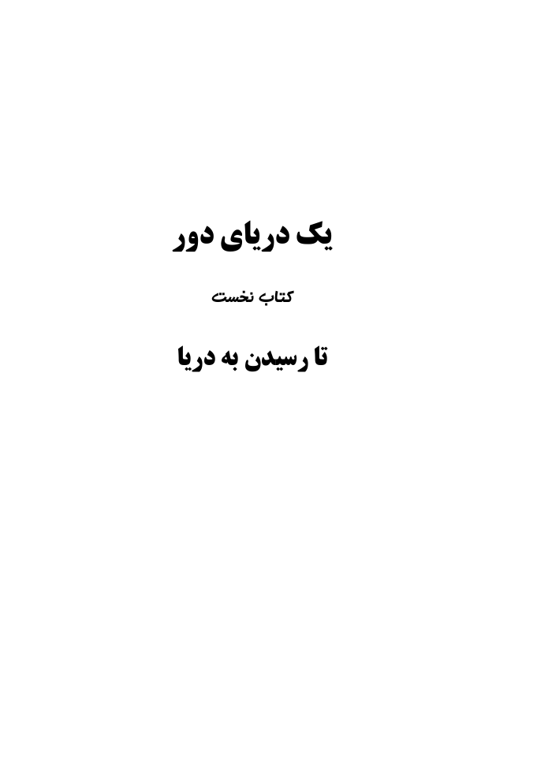
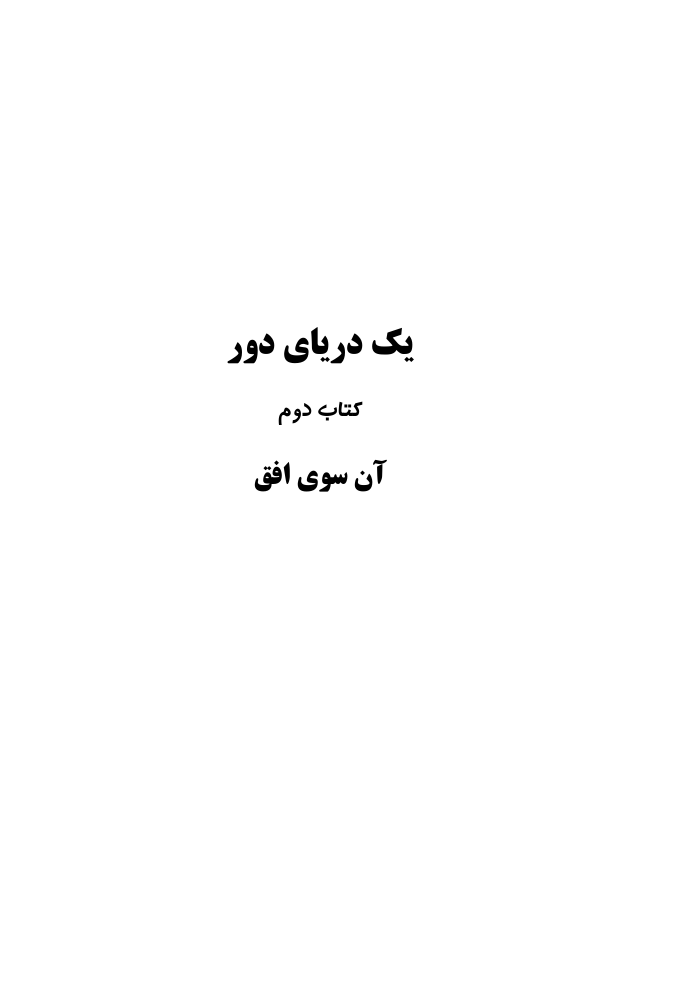

کتاب نخست
تا رسیدن به دریا
نخستین گامهای این سفر درونی؛ روایتی از خاطره، فقدان، تنهایی، عشق و امید.
دو جلد، یک سفر
روایتی از حافظه، عشق، تنهایی، سفر، اجتماع و امید؛
از راه رفتن به سوی دریا تا ایستادن در برابر افق.

کتاب نخست
نخستین گامهای این سفر درونی؛ روایتی از خاطره، فقدان، تنهایی، عشق و امید.

کتاب دوم
ادامهٔ همان سفر از افقی دیگر؛ جایی که حافظه، عشق، تنهایی، اجتماع و امید دوباره به هم میرسند.